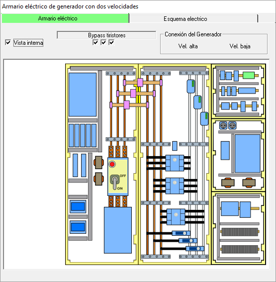

Figura 1.
En la vista interior (ver figura) se aprecian los siguientes aspectos:

Figura 2.
El panel derecho contiene el Interruptor Principal, que está conectado a los cables de la Red Eléctrica (que entran por abajo) y se conecta con las barras de ese panel. Las barras en la parte izquierda del panel central están conectadas a través de fusibles con las barras del primer panel. La diferencia de color entre las barras de las figuras 1 y 2 derivan de la posición del Interruptor Principal.
La tensión de las barras es de 690 V, típicamente.